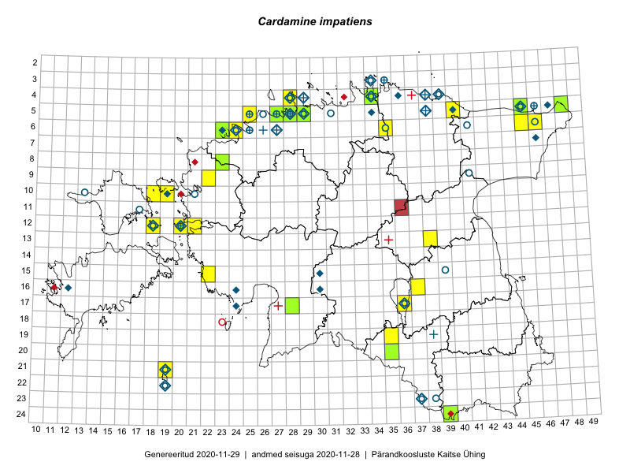

Cardamine impatiens
Uuendatud: 2016-12-02
Kaardile koondatud taksonid: Cardamine impatiens L.

Kaart põhineb 30 kirjel, neist vaatlusi 29 ja eksemplare 1. Taksonit on leitud 20 ruudust.
Kuvatud viited 20 esimesele andmebaasikirjele, ülejäänud PlutoFis
- Ott Luuk: 2014-07-24: 12-20: ala
- Tiit Hallikma, Toomas Kukk: 2015-08-27: 12-21: ala
- Tiit Hallikma, Toomas Kukk: 2015-08-25: 12-21: GPS punkt
- Ott Luuk, Hannes Pehlak: 2015-06-12: 20-35: ala
- Meeli Mesipuu, Timo Luhamäe: 2015-07-23: 05-48: ala
- Erkki Otsman, Sergei Smirnov: 2015-06-26: 05-28: ala
- Ülle Jõgar, Illi Tarmu, Kai Rünk: 2015-07-03: 13-38: ala
- Kai Rünk, Ülle Jõgar, Illi Tarmu: 2015-05-16T07:00Z: 19-35: ala
- Kai Rünk, Ülle Jõgar, Illi Tarmu: 2015-05-16: 19-35: GPS punkt
- Erkki Otsman, Sergei Smirnov: 2015-06-29: 05-28: GPS punkt
- Meeli Mesipuu: 2015-06-01: 05-45: GPS punkt
- Mari Metsoja, Jaak-Albert Metsoja: 2015-07-30: 05-25: ala
- Timo Luhamäe, Meeli Mesipuu: 2015-07-23: 05-48: GPS punkt
- Helle Mäemets, Mare Leis: 2015-06-25: 17-36: ala
- Ülle Jõgar, Illi Tarmu, Kai Rünk: 2015-07-23: 13-38: GPS punkt
- Tiina Elvisto, Kadi-Liis Kesler: 2015-05-12: 05-29: ala
- Ott Luuk, Tiit Hallikma: 2016-05-20: 06-35: ala
- Ott Luuk, Tiit Hallikma: 2016-05-20: 05-40: ala
- Tiit Hallikma, Ott Luuk: 2016-05-20: 05-40: GPS punkt
- Tiit Hallikma, Ott Luuk: 2016-05-20: 06-35: GPS punkt